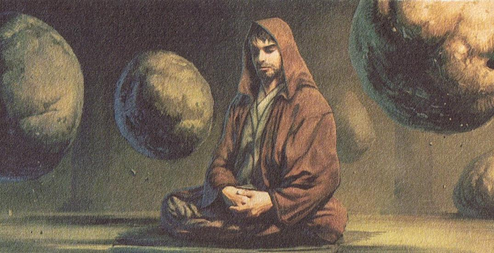
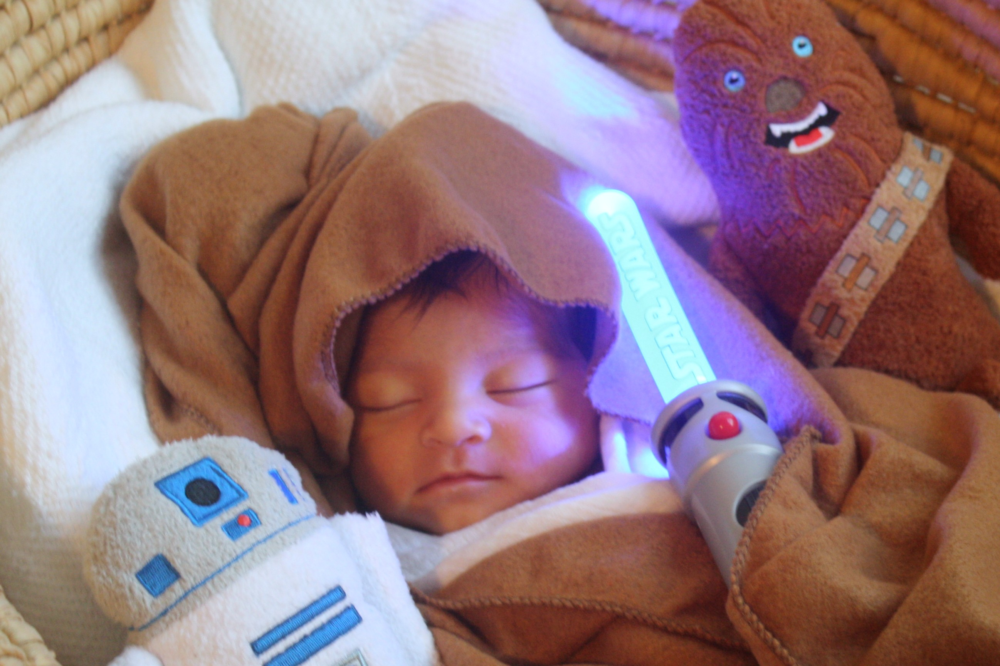
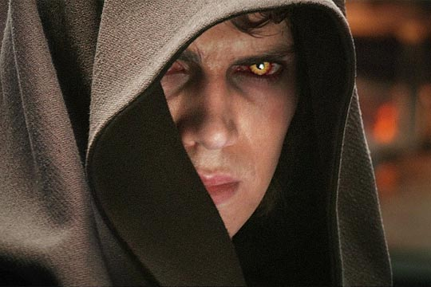
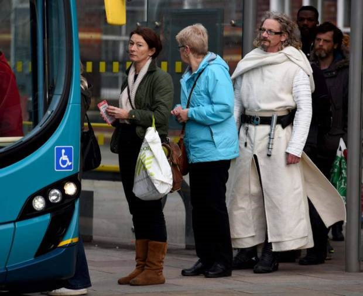
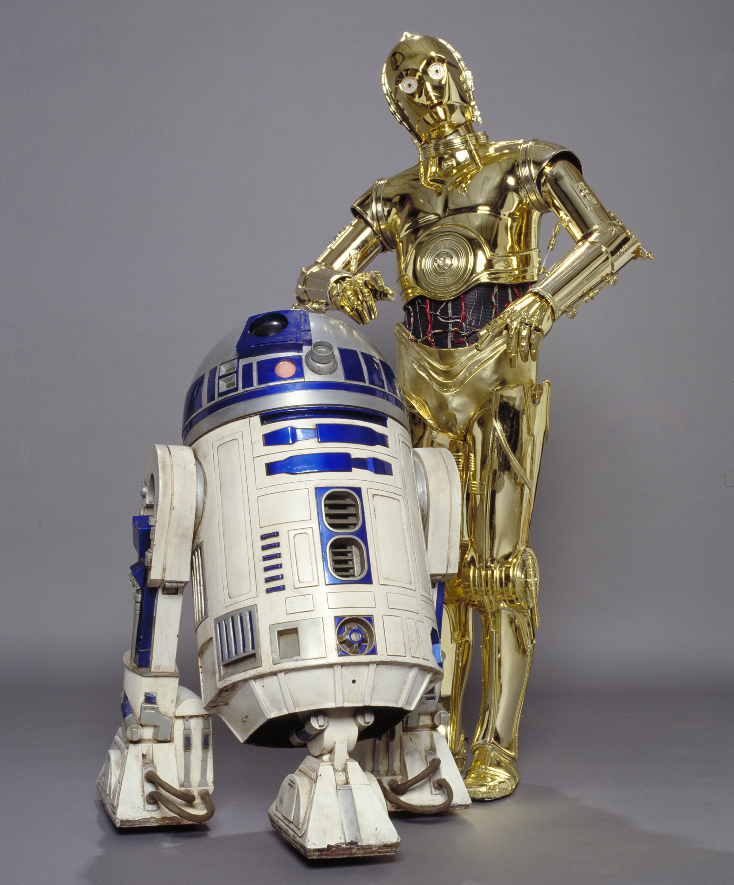
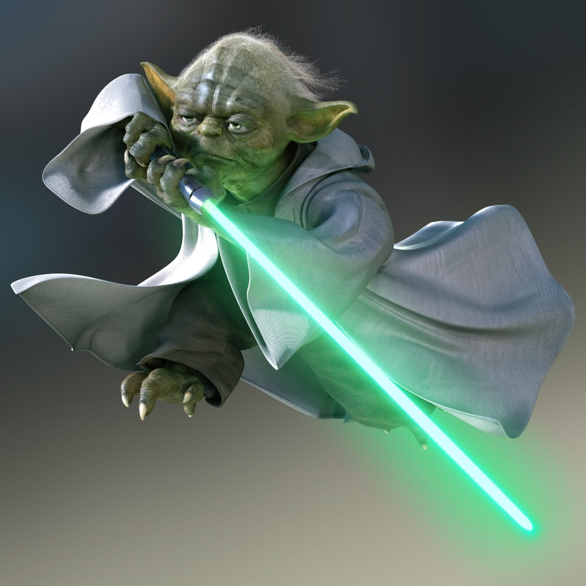
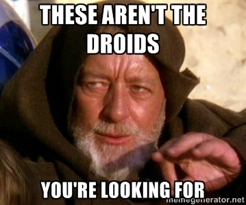
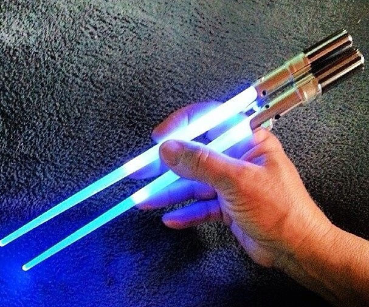
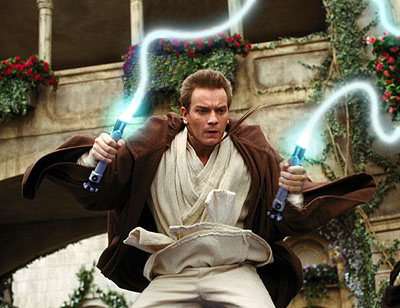
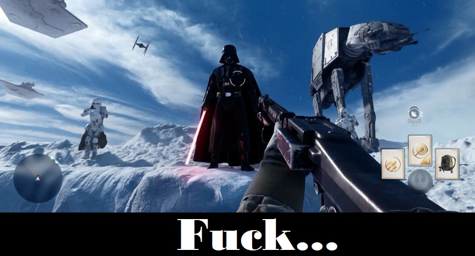

Животът на един джадай
Джадаите са хора на спокойствието и медитацията. Те прекарват деня си в мисли или в гледане в една точка

Джадайството е в кръвта им и още от малки се раждат с мини светлинен меч, който порасва с времето

На джадаите не им е позволено да се влюбват и да се женят, защото последния път
когато джадай се влюби и ожени после изби група деца и му отрязаха крайниците

Джадаите още от малки ги учат да бъдат изключително скромни и да не се изкушават от нищо.
Затова много често можеш да ги видиш в градския транспорт и метрото, докато ситските лордове се разкарват в S класите си

Все пак има и доста готини неща да си джадаи, имаш си личен робот, който някакси разбираш какво казва,
можеш да променяш мислите на хората и да ги баламосваш, както и можеш да си размяташ меча наляво-надясно
  
Между другото, джадаите са известни с това, че могат да правят абсолютно каквото си искат със своя меч...да,
освен това...като например:

Да си режат хляба без проблеми

Да си хапват ориз на далечната планета Китаин

Да скачат на "въже"
Да....това е машина за правене на сладолед, но едва ли ще ми повярвате...
Но те имат и личен живот.
Абе в края на краищата не е лошо да си джедай, само внимавай да не ти се случи това:

И нека силата бъде с теб...винаги!